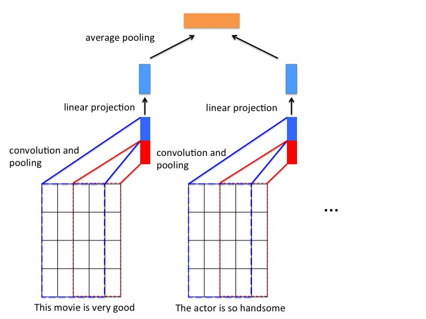

# 基于双层序列的文本分类
## 简介
序列是自然语言处理任务面对的一种主要输入数据类型：句子由词语构成，而多个句子进一步构成了段落。因此，段落可以看作是一个嵌套的序列（或者叫作：双层序列），这个序列的每个元素又是一个序列。
双层序列是 PaddlePaddle 支持的一种非常灵活的数据组织方式，能够帮助我们更好地描述段落、多轮对话等更为复杂的语言数据。以双层序列作为输入，我们可以设计一个层次化的网络，分别从词语和句子级别编码输入数据，从而更好地完成一些复杂的语言理解任务。
本例将演示如何在 PaddlePaddle 中将长文本输入（通常能达到段落或者篇章基本）组织为双层序列，完成对长文本的分类任务。
## 模型介绍
我们将一段文本看成句子的序列，而每个句子又是词语的序列。
我们首先用卷积神经网络编码段落中的每一句话；然后，将每句话的表示向量经过池化层得到段落的编码向量；最后将段落的编码向量作为分类器（以softmax层的全连接层）输入，得到最终的分类结果。
**模型结构如下图所示**

图1. 基于双层序列的文本分类模型
PaddlePaddle 实现该网络结构的代码见 `network_conf.py`。
对双层时间序列的处理，需要先将双层时间序列数据变换成单层时间序列数据，再对每一个单层时间序列进行处理。 在 PaddlePaddle 中 ，`recurrent_group` 是帮助我们构建处理双层序列的层次化模型的主要工具。这里，我们使用两个嵌套的 `recurrent_group` 。外层的 `recurrent_group` 将段落拆解为句子，`step` 函数中拿到的输入是句子序列；内层的 `recurrent_group` 将句子拆解为词语，`step` 函数中拿到的输入是非序列的词语。
在词语级别，我们通过 CNN 网络以词向量为输入输出学习到的句子表示；在段落级别，将每个句子的表示通过池化作用得到段落表示。
``` python
nest_group = paddle.layer.recurrent_group(input=[paddle.layer.SubsequenceInput(emb),
hidden_size],
step=cnn_cov_group)
```
拆解后的单层序列数据经过一个CNN网络学习对应的向量表示，CNN的网络结构包含以下部分：
- **卷积层**： 文本分类中的卷积在时间序列上进行，卷积核的宽度和词向量层产出的矩阵一致，卷积后得到的结果为“特征图”， 使用多个不同高度的卷积核，可以得到多个特征图。本例代码默认使用了大小为 3（图1红色框）和 4（图1蓝色框）的卷积核。
- **最大池化层**： 对卷积得到的各个特征图分别进行最大池化操作。由于特征图本身已经是向量，因此最大池化实际上就是选出各个向量中的最大元素。将所有最大元素又被拼接在一起，组成新的向量。
- **线性投影层**： 将不同卷积得到的结果经过最大池化层之后拼接为一个长向量， 然后经过一个线性投影得到对应单层序列的表示向量。
CNN网络具体代码实现如下：
```python
def cnn_cov_group(group_input, hidden_size):
conv3 = paddle.networks.sequence_conv_pool(
input=group_input, context_len=3, hidden_size=hidden_size)
conv4 = paddle.networks.sequence_conv_pool(
input=group_input, context_len=4, hidden_size=hidden_size)
output_group = paddle.layer.fc(input=[conv3, conv4],
size=hidden_size,
param_attr=paddle.attr.ParamAttr(name='_cov_value_weight'),
bias_attr=paddle.attr.ParamAttr(name='_cov_value_bias'),
act=paddle.activation.Linear())
return output_group
```
PaddlePaddle 中已经封装好的带有池化的文本序列卷积模块：`paddle.networks.sequence_conv_pool`，可直接调用。
在得到每个句子的表示向量之后， 将所有句子表示向量经过一个平均池化层， 得到一个样本的向量表示， 向量经过一个全连接层输出最终的预测结果。 代码如下：
```python
avg_pool = paddle.layer.pooling(input=nest_group, pooling_type=paddle.pooling.Avg(),
agg_level=paddle.layer.AggregateLevel.TO_NO_SEQUENCE)
prob = paddle.layer.mixed(size=class_num,
input=[paddle.layer.full_matrix_projection(input=avg_pool)],
act=paddle.activation.Softmax())
```
## 使用 PaddlePaddle 内置数据运行
### 训练
在终端执行：
```bash
python train.py
```
将以 PaddlePaddle 内置的情感分类数据集: `imdb` 运行本例。
### 预测
训练结束后模型将存储在指定目录当中（默认models目录），在终端执行：
```bash
python infer.py
```
默认情况下，预测脚本将加载训练一个pass的模型对 `imdb的测试集` 进行测试。
## 使用自定义数据训练和预测
### 训练
1.数据组织
输入数据格式如下：每一行为一条样本，以 `\t` 分隔，第一列是类别标签，第二列是输入文本的内容。以下是两条示例数据：
```
1 This movie is very good. The actor is so handsome.
0 What a terrible movie. I waste so much time.
```
2.编写数据读取接口
自定义数据读取接口只需编写一个 Python 生成器实现**从原始输入文本中解析一条训练样本**的逻辑。以下代码片段实现了读取原始数据返回类型为： `paddle.data_type.integer_value_sub_sequence` 和 `paddle.data_type.integer_value`
```python
def train_reader(data_dir, word_dict):
"""
Reader interface for training data
:param data_dir: data directory
:type data_dir: str
:param word_dict: path of word dictionary,
the dictionary must has a "UNK" in it.
:type word_dict: Python dict
"""
def reader():
UNK_ID = word_dict['
']
word_col = 1
lbl_col = 0
for file_name in os.listdir(data_dir):
file_path = os.path.join(data_dir, file_name)
if not os.path.isfile(file_path):
continue
with open(file_path, "r") as f:
for line in f:
line_split = line.strip().split("\t")
doc = line_split[word_col]
doc_ids = []
for sent in doc.strip().split("."):
sent_ids = [
word_dict.get(w, UNK_ID)
for w in sent.split()]
if sent_ids:
doc_ids.append(sent_ids)
yield doc_ids, int(line_split[lbl_col])
return reader
```
需要注意的是， 本例中以英文句号`'.'`作为分隔符， 将一段文本分隔为一定数量的句子， 且每个句子表示为对应词表的索引数组（`sent_ids`）。 由于当前样本的表示(`doc_ids`)中包含了该段文本的所有句子， 因此，它的类型为：`paddle.data_type.integer_value_sub_sequence`。
3.指定命令行参数进行训练
`train.py`训练脚本中包含以下参数：
```
Options:
--train_data_dir TEXT path of training dataset (default: None). if this
parameter is not set, imdb dataset will be used.
--test_data_dir TEXT path of testing dataset (default: None). if this
parameter is not set, imdb dataset will be used.
--word_dict_path TEXT path of word dictionary (default: None).if this
parameter is not set, imdb dataset will be used.if
this parameter is set, but the file does not exist,
word dictionay will be built from the training data
automatically.
--class_num INTEGER class number (default: 2).
--batch_size INTEGER the number of training examples in one batch
(default: 32).
--num_passes INTEGER number of passes to train (default: 10).
--model_save_dir TEXT path to save the trained models (default: 'models').
--help Show this message and exit.
```
修改`train.py`脚本中的启动参数，可以直接运行本例。 以`data`目录下的示例数据为例，在终端执行：
```bash
python train.py --train_data_dir 'data/train_data' --test_data_dir 'data/test_data' --word_dict_path 'dict.txt'
```
即可对样例数据进行训练。
### 预测
1.指定命令行参数
`infer.py`训练脚本中包含以下参数：
```
Options:
--data_path TEXT path of data for inference (default: None). if this
parameter is not set, imdb test dataset will be used.
--model_path TEXT path of saved model. (default:
'models/params_pass_00000.tar.gz')
--word_dict_path TEXT path of word dictionary (default: None).if this
parameter is not set, imdb dataset will be used.
--class_num INTEGER class number (default: 2).
--batch_size INTEGER the number of examples in one batch (default: 32).
--help Show this message and exit.
```
2.以`data`目录下的示例数据为例，在终端执行：
```bash
python infer.py --data_path 'data/infer.txt' --word_dict_path 'dict.txt'
```
即可对样例数据进行预测。